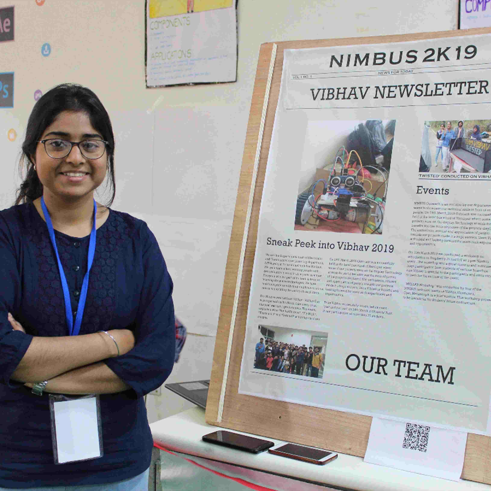

AR Newsletter Team Vibhav

AR newsletter is a newsletter that takes readers beyond the printed page. The main aim
of AR newsletter is to attract new audiences especially young people to increase their
waning number of readers with an interactive environment.